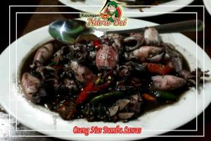
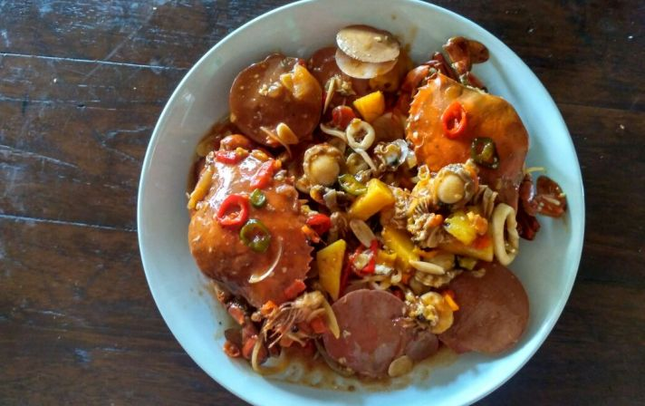
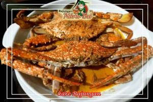
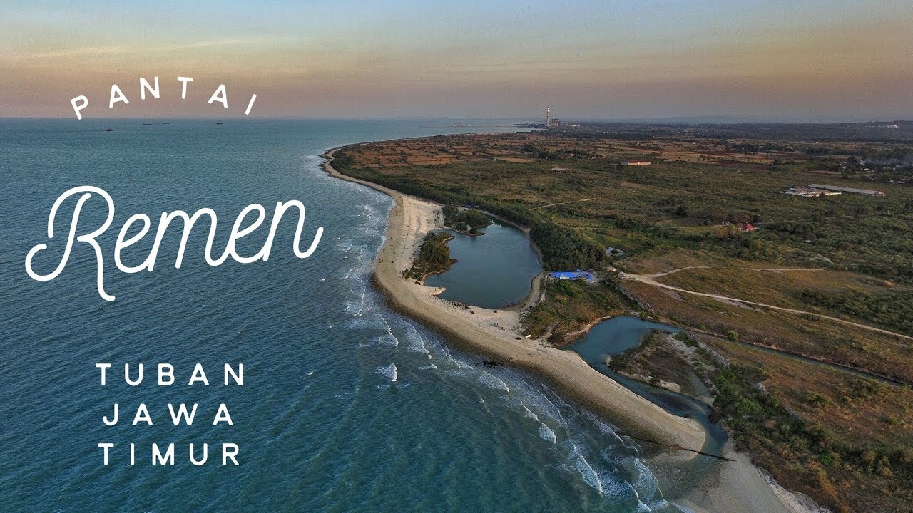
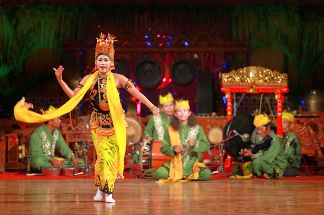

Profil Tuban

Profil Tuban
Kabupaten Tuban Merupakan salah satu Kabupaten dari 38 Kabupaten dan Kota yang
ada di wilayah administratif Provinsi Jawa Timur. Wilayah Kabupaten Tuban berada
di jalur pantai utara (Pantura) Pulau Jawa. Luasnya adalah 1.904,70 km² dan
panjang pantai mencapai 65 km. Penduduknya berjumlah sekitar 1 juta jiwa.
Tuban disebut sebagai Kota Wali karena Tuban adalah salah satu kota di Jawa
yang menjadi pusat penyebaran ajaran Agama Islam namun beberapa kalangan ada
yang memberikan julukan sebagai kota tuak karena daerah Tuban sangat terkenal
akan penghasil minuman (tuak & legen) yang berasal dari sari bunga siwalan (
ental). Beberapa obyek wisata di Tuban yang banyak dikunjungi wisatawan adalah
Makam Wali, contohnya Sunan Bonang, Makam Syeh Maulana Ibrahim Asmaraqandi
(Palang), Sunan Bejagung dll. Selain sebagai kota Wali, Tuban dikenal sebagai
Kota Seribu Goa karena letak Tuban yang berada pada deretan Pegunungan Kapur
Utara. Bahkan beberapa Goa di Tuban terdapat stalaktit dan Stalakmit.
Goa yang terkenal di Tuban adalah Goa Akbar, Goa Putri Asih, dll. Tuban
terletak di tepi pantai pulau Jawa bagian
utara, dengan batas-batas wilayah: utara laut Jawa, sebelah timur Lamongan,
sebelah selatan Bojonegoro, dan barat Rembang dan Blora Jawa Tengah.
Kuliner



- Kuliner Cumi-Cumi
cumi-cumi adalah makanan
yang enak dan salah satunya berasal dari
kota tuban, cumi-cumi ini hidup di laut dengan kedalaman laut yang agak
dalam, makanan ini sangat cocok untuk pecinta kuliner. Tetapi jika anda
mempunyai penyakit kolesterol sebaik nya tidak memakan makanan ini
- Kuliner Kepiting
Kuliner satu ini ada kuliner yang
digemari/dicari oleh pecinta seafood karena dengan perpaduan daging yang
lembut dengan bumbu yang disajikan sangat memanjakan lidah. jika anda ke
kota tuban jangan lupa mencoba kuliner satu ini.
- Kuliner Rajungan
Kuliner ini tidak ada bedanya dengan kuliner kepiting tetapi biasa nya
kuliner ini sangat langka untuk di temukan di restoran restoran biasa
biasanya rajungan dijual di restoran yang mewah dan agak mahal.
Wisata

Pantai Remen Tuban
Pantai remen tuban merupakan salah satu wisata pantai yang terletak di Kabupaten Tuban,
Jawa Timur yang memiliki nama lengkap wisata pantai pasir putih remen.
Karena memang pasir yang terdapat di pantai menawan rasa bali bukan pasir biasa
yang seringkali dimanfaatkan untuk bahan bangunan melainkan pasir putih.
Pantai cantik di Tuban ini menjadi istimewa karena terdapat danau yang dikelilingi
hutan cemara sehingga bernuansa pantai alam di tengah hutan.selain pantai remen juga
banyak pantai dan tempat wisata lainya. yaitu pantai boom yang berdekatan dengan
masjid agung tuban dan makam sunan bonang.
Budaya

Kebudayaan Sandur
Sandur merupakan kesenian tradisional asli Tuban merupakan seni
pertunjukan yang tumbuh dan berkembang di masyarakat pedesaan.
Sebagai seni rakyat sandur memiliki sifat yang komunikatif. Tidak
ada batasan antara pemain dan penonton. Sehingga mereka leluasa
untuk erinteraksi. Tidak menggunakan pola-pola yang rumit baik
dalam hal iringam (music), gerak (tari) dan dialog. Namun demikian,
dari artistic, misalnya blabar terbuat dari janur, rontek, sesaji
mempunyai kekuatan pada nilai-nilai ritualnya. Menurut beberapa sumber
tertulis Sandur berasal dari kata “Beksan-Mundur”
(menari sambil berjaan ke belakang).